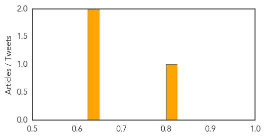
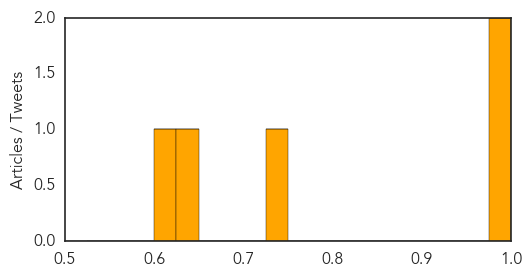

Bubonic Plague
30-Day Web Trend
0 alerts, 0 warnings

30-Day Twitter Trend
0 alerts, 0 warnings

Article Locations

Article Confidences
Top Articles:
Top Tweets:
-
No tweets found for Aug 06, 2015
Meningitis
30-Day Web Trend
0 alerts, 0 warnings

30-Day Twitter Trend
1 alerts, 0 warnings

Article Locations

Article Confidences
Top Articles:
- 0.989
- Protecting youths from meningitis
- 0.978
- Africa needs more vaccines to fight meningitis
- 0.734
- Deadly infection outbreaks could be countered if hospitals share information
- 0.644
- Coltishall mother urging students’ to take up free meningitis vaccine
- 0.613
- New pentavalent vaccination program to target 1.4 million children
Top Tweets:
-
No tweets found for Aug 06, 2015